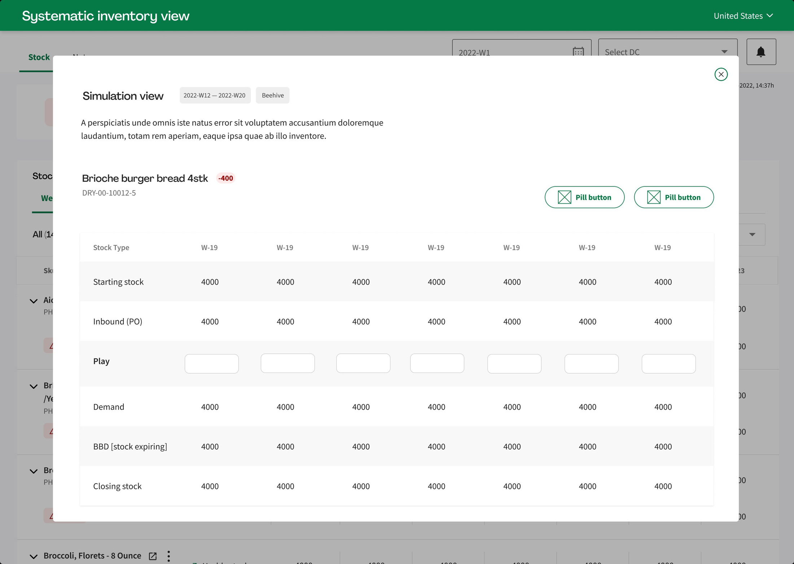
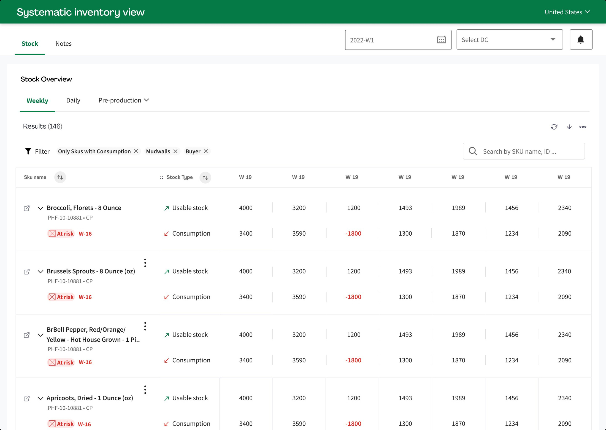
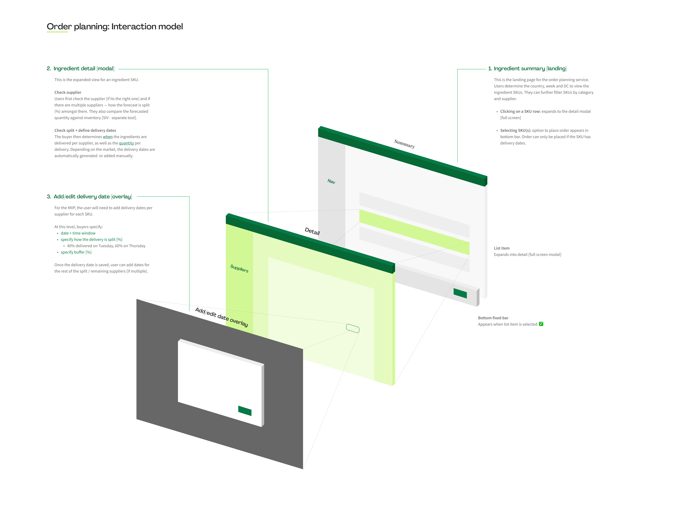
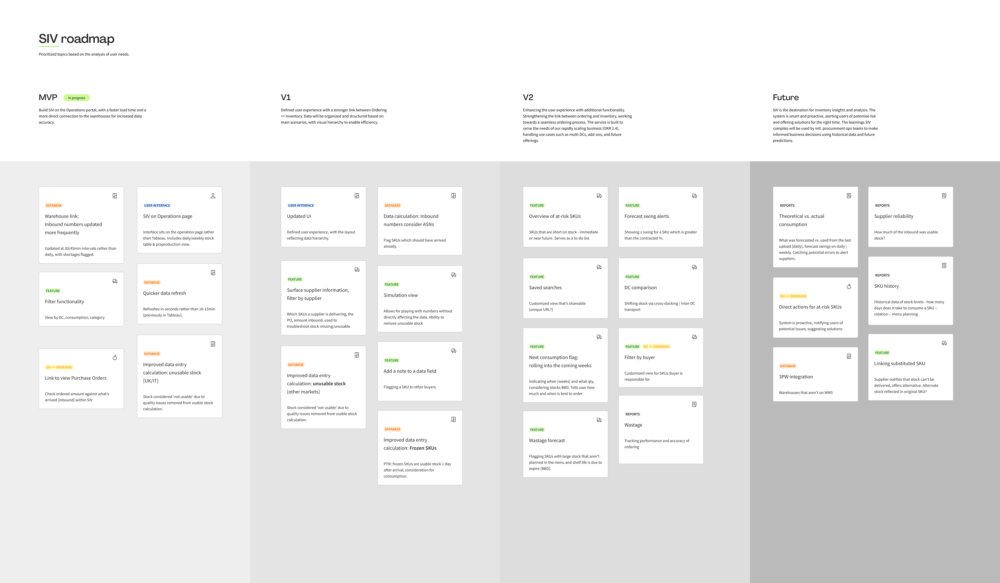
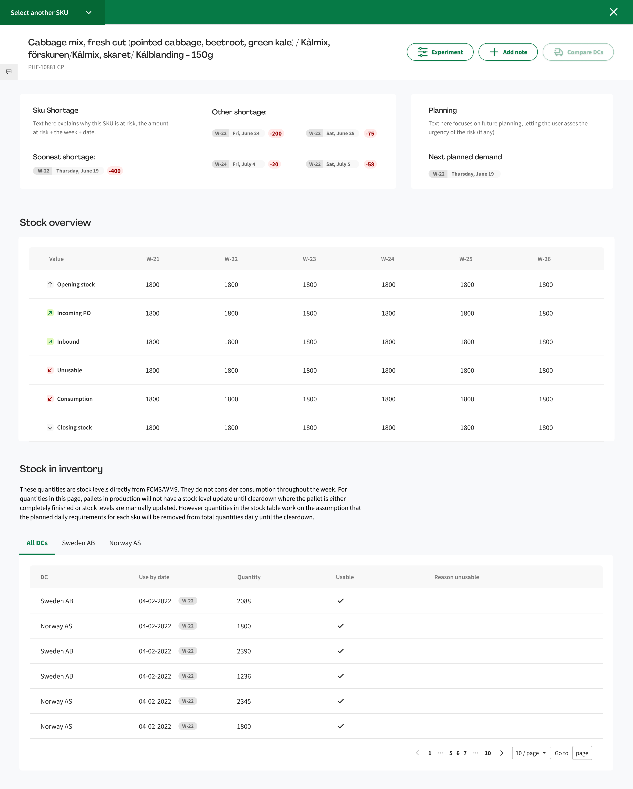

HelloFresh's procurement teams were planning orders for thousands of ingredient SKUs using dashboards that were never built for the job. We rebuilt the buyer's workflow around a single planning surface — disciplined by research across DACH, Italy, the UK, Nordics and Benelux.
HelloFresh runs one of Europe's largest fresh-food supply chains. Behind every meal-kit sits a buyer placing orders against forecasts that shift daily — frozen SKUs landing weeks in advance, fresh produce arriving on the morning of production. Margins of error are thin, and the cost of getting it wrong is thrown stock or empty boxes.
At the time of this engagement, buyers were stitching together their decisions across three or four different tools. Tableau dashboards gave them a view of forecast and stock — but the data wasn't transactional, filters were brittle, and the product itself lacked any clear definition of how it was meant to be used. Compounded across markets, the result was time lost, errors absorbed, and decisions made on instinct.
Tableau pulled from CMS once a week. Buyers double-checked totals against multiple sources before placing any order — typically 30 to 45 minutes burned per day, per buyer.
No clear ownership of what the tool was for, no buyer-led requirements, no roadmap. Features had been added in isolation and never reconciled with how the work actually got done.
Filters couldn't be saved, side-by-side comparison was impossible, and there was no way to act on what you saw. Insight ended where the workflow began.
Before drawing a single screen, we ran follow-up interviews with buyers in each of HelloFresh's five European DCs. The same role on paper, but five different operating realities. The synthesis became the single most important artefact of the project: a cross-market view of where the workflow converged and where it diverged.


The single most consequential decision was a reframe: SIV was being treated as a dashboard, but every buyer interview pointed at a workflow tool. The shift — from passive visibility to active order planning — set the direction for the rest of the engagement.
Buyers don't need a prettier Tableau. They need a place where forecast, inventory and order placement converge. The redesign positioned SIV as the single planning surface — Tableau retired as a reporting layer.
Across markets, the recurring decision wasn't "how much" — it was "from whom, split how, delivered when." Multi-supplier splits with percentage allocation became the core mental model of the planning flow.
Frozen categories think in weeks; fresh categories think in days. A single time abstraction would have failed half the user base. The flow exposes both, and lets the category — not the UI — drive cadence.
The interview backlog held forty-plus feature requests. The roadmap that shipped held nine in MVP, eight in V2, six in Future — every cut argued against a user-research source.
The Order Planning module collapses what used to be three tools into a single flow. The buyer enters at the country/week/DC level, drills into a SKU, defines delivery cadence per supplier, and confirms — without leaving the surface.



Status cards, purchase orders, incoming POs by day, and the weekly stock projection — every signal the buyer needs to decide, on a single screen.
The three-screen model isn't a sequence of pages — it's a single surface with layers. Context is preserved at every step.
A modal — not a new page — for SKU detail. Buyers compare across the list; context shouldn't be lost.
Order placement is bottom-bar, action-conditional. It only appears when a SKU has delivery dates set.
Per-supplier split is the primary mental model. Quantities follow from %, not the other way around.
Every feature on the roadmap traces back to a buyer interview. MVP holds the spine of the workflow. V2 introduces troubleshooting features that depend on MVP being adopted first. Future is reserved for predictive and reporting work — valuable, but not foundational.
SIV becomes the operations portal, with a basic exec piece. Faster, more accurate access to consolidated inventory data for movements.
Enhancing the core experience with additional functionality. Moving beyond visibility into supplier reliability, troubleshooting and side-by-side DC views.
SIV is the source-of-truth for accuracy, insights and analytics. The system now actively supports buyers, alerting users of potential risk areas.
HelloFresh SE
Food-tech · Supply chain
Berlin, Germany
Nicolas Alesio
Senior product designer
Solo engagement
Buyer operations leads
Supply chain analysts
Biweekly reviews
Engagement: 2025
Discovery through shipped release
Live in production
This case study focuses on discovery, synthesis and the interaction model. The applied visual design — design tokens, table density, the order-bar component, the delivery-date overlay — is documented separately.